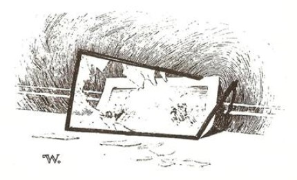

YENİ YIL ARİFESİ'NDE, gece yarısından sonraki ilk on beş dakika. Dünyanın geri kalanında olduğu gibi Tarker's Mills'te de yıl kapanıyor ve dünyanın geri kalanında olduğu gibi Tarker's Mills'te de yeni yıl değişimler getiriyor.
Milt Sturmfuller ölmüş ve sonunda esaretinden kurtulan karısı Donna Lee kasabadan taşınmıştı. Bazılarının dediğine göre Boston'a, diğerlerine göreyse Los Angeles'a gitmişti. Başka bir kadın Corner Kitapçısı'nı işletmeye çalışmış ama başarılı olamamıştı, ama şükürler olsun ki, berber dükkânı, Basket Market ve bar eski yerlerinde işlerini sürdürüyorlardı. Clyde Corliss ölmüştü, ama hiçbir işe yaramayan iki erkek kardeşi Alden ve Errol, hâlâ hayatta ve sağlıklıydılar, iki kasaba ötedeki A&P'de yemek fişlerini paraya çeviriyorlardı - bu işi, burada, Mills'te yapmaya cesaret edemiyorlardı. Tarker's Mills'in en güzel turtalarını pişiren Büyük-an-ne Hague kalp krizinden ölmüştü; Willie Harrington, doksan iki yaşındaydı, Kasım'ın sonlarında Ball Caddesi'ndeki küçük evinin önündeki buzda kayarak düşüp kalça kemiğini kırmıştı; ama kütüphaneye varlıklı bir yaz sakininin vasiyeti üzerine yüklü bir bağış yapılmıştı ve gelecek yıldan itibaren, anımsanamayacak kadar eski zamanlardan beri kasaba toplantılarına konu olan kütüphanenin çocuk bölümünün yapımına artık başlanacaktı. Ollie Parker, okul müdürü, Eylül ayında durduramadığı bir burun kanaması geçirmiş ve ardından kendisine akut yüksek tansiyon teşhisi konmuştu. Beynindeki damarlar çatlamadığı için şanslısın, diye homurdanmıştı doktor, tansiyon aletini kolundan çözerken ve Ollie'ye yaklaşık yirmi kilo vermesi gerektiğini söylemişti. Nasıl olduysa, Ollie Noel'e kadar yirmi kiloyu verdi. Artık yeni bir erkek gibi görünüyor ve kendisini öyle hissediyordu. Karısı çapkın bir sırıtışla yakın arkadaşı Delia Burney'e "Yeni bir erkek gibi davranıyor," diyecekti. Uçurtma mevsiminde Canavar tarafından öldürülen Brady Kincaid hâlâ ölüydü. Ve okulda Brady'nin bir sıra arkasında oturan Marty Coslaw ise hâlâ kötürümdü.
Bazı şeyler değişirken bazı şeylerse değişmiyor ve Tarkers Mills'de bir yıl gelirken bir diğeri sona eriyordu - uluyan bir tipi dışarıda kükrüyordu, Canavar da etraftaydı. Bir yerlerde.
Marty Coslaw ve dayısı Al, Coslaw'ların oturma odasında oturmuş Dick Clark'ın Sallanan Yeni Yıl Arifesi programını izliyorlardı. Al Dayı kanepede oturuyordu. Marty ise tekerlekli sandalyesinin üzerinde televizyonun karşısında oturuyordu. Marty'nin kucağında bir silah vardı, .38'lik Colt Woodsman. İki mermi silahın yuvalarına yerleştirilmişti, ikisi de saf gümüştü. Kurşunları yapan, Al Dayı'nın Hampden'dan bir arkadaşı olan Mac McCutcheon'du. Başlangıçta biraz karşı çıkmasına rağmen bu Mac McCutcheon, Marty'nin gümüş kilise merasimi kaşığını bir propan fenerinin alevinde eritmişti ve hızla dönerek gitmesi için gereken barut ağırlığını da ayarlamıştı. "Çalışacağını garanti edemem," demişti Al Dayı'ya, "ama herhalde çalışır. Ne öldüreceksin, Al? Bir kurtadam ya da bir vampir?"
"Her birinden birer tane," demişti sırıtarak Al Dayı. "İşte bu yüzden sana iki kurşun yaptırıyorum. Etrafta dolaşan bir banshee9 de var, ama babası Kuzey Dakota'da ölmüş ve bu yüzden Fargo'ya giden uçağı yakalaması gerekti." Bir süre karşılıklı kahkahalarla gülmelerinin ardından Al şöyle konuşmuştu: "Bunlar yeğenim için. Filmlerdeki canavarlara deli oluyor ve ben de bunun onun için ilginç bir Noel hediyesi olacağını düşündüm."
(9.- Banshee: İrlanda dilinde Bean Sidhe, İskoçya Kelt dilinde Ban Sith diye isimlendirilen, Kelt folklorundaki doğaüstü yaratık. Geceleyin bir banshee'nin hüzünlü ağlayışını ya da yüksek sesle dövünüşünü işitmenin aileden bir kişinin öleceğinin habercisi olduğuna inanılırdı, çn.)
"Eğer bir tahta parçasına falan ateş ederse, o tahtayı dükkâna getir," demişti Mac. "Ne olduğunu görmek isterim."
Aslında Al Dayı, bu konu hakkında nasıl düşünmesi gerektiğini hiç bilmiyordu. Temmuz'un üçünden beri Marty'i görmemiş ve Tarker's Mills'e de uğramamıştı; çünkü tahmin ettiği gibi, ablası, yani Marty'nin annesi, havai fişekler yüzünden ona çok kızgındı. Senin yüzünden ölebilirdi, seni aptal sürüngen! Tanrı aşkına ne yaptığını düşünüyordun? diye telefonun diğer ucundan haykırıp duymuştu.
Görünüşe bakılırsa hayatını kurtaran o havai fişekler olmuş -diye cevap vermeye çalışmıştı Al, ama kulağına bağlantının kesildiğini gösteren keskin bir klik sesi gelmişti. Ablası dik kafalının biriydi; eğer bir şeyi duymak istemiyorsa duymazdı.
Ardından, bu ayın başlarında Marty'den bir telefon gelmişti. "Seni görmeliyim Al Dayı," demişti Marty. "Konuşabileceğim tek kişi sensin."
"Annemiz bana biraz bozuk, evlat," diye cevaplamıştı Al Dayı.
"Bu önemli," diye ısrar etmişti Marty. "Lütfen, lütfen."
Bunların üzerine Al Dayı, Mill's'e gelmiş, ablasının sinirli buz gibi sessizliğine cesaretle karşı koymuş ve Aralık başındaki soğuk bir günde, dikkatli bir şekilde spor arabasının koltuğuna yerleştirdiği Marty'i gezintiye çıkarmıştı. Ama bu defa hız ve çılgınca kahkahalar atılmadı. Yalnızca Marty konuşuyor ve Al Dayı sessizce dinliyordu. Hikâye anlatıldıkça Al Dayı'nın içindeki huzursuzluk da giderek büyümüştü.
Marty, Al Dayı'ya olanları anlatmaya, muhteşem havai fişek gecesinden ve yaratığın sol gözünü Kara Kedi torpilleriyle nasıl havaya uçurduğundan başlamıştı. Ardından Cadılar Bayramı'm anlatıp Peder Lowe'dan bahsetti. En sonunda da Peder Lowe'a isimsiz mektuplar gönderdiğini söyledi... başlangıçtakiler isimsizdi, Milt Sturmfuller'in Portland'da öldürülüşünün ardından gönderdiği son ikisi dışında. Bu iki mektubu, İngilizce dersinde kendisine öğretildiği gibi imzalamıştı: Sevgilerimle, Martin Coslaw.
"Adama o mektupları yollamamalıydın, ne isimsiz ne de isminle!" diye sertçe konuştu Al Dayı. "İsa aşkına, Marty! Yanılıyor olabileceğin hiç aklına gelmedi mi?"
"Elbette, geldi," demişti Marty, "İşte bu yüzden son ikisini kendi adımla imzaladım. Bana bundan sonra neler olduğunu sormayacak mısın? Onun babamı arayıp, benim neden kendini öldürmüyorsun? ya da etrafını çeviriyoruz şeklinde mektuplar yolladığımı söyleyip söylemediğini sormayacak mısın?"
"Bunu yapmadı, öyle değil mi?" diye sordu Al, yanıtı zaten biliyordu.
"Hayır," dedi Marty sessizce. "Babamla konuşmadı, annemle konuşmadı, hatta benimle bile konuşmadı."
"Marty, bunun yüzlerce sebebi olabilir-"
"Hayır. Sadece bir tane var. O kurtadam, o canavar ve dolunayı bekliyor. Peder Lowe olarak hiçbir şey yapamaz. Ama kurtadam olarak çok şey yapabilir. Beni tamamen susturabilir."
Marty öyle acı bir yalınlıkla konuşmuştu ki Al neredeyse ikna olmuş durumdaydı. "Peki, benden ne istiyorsun?" diye sordu.
Marty, ne istediğini anlattı. İki gümüş kurşun istiyordu ve onları ateşlemesi için bir tabanca gerekiyordu; bir de Al Dayı'nın yeni yıl arifesinde, yani dolunay gecesinde evde olmasını istiyordu.
"Böyle bir şey yapmayacağım," dedi Al Dayı. "Marty, sen iyi bir çocuksun, ama bunların hepsi deli saçması. Sanırım tekerlekli sandalyeden kaynaklanan ateşli bir hastalığa falan tutuldun. Eğer bu konuda düşünürsen, söylediklerimi anlayacaksın."
"Belki de," dedi Marty. "Ama tam yeni yıl günü bir telefon alırsan ve sana yatağımda parçalara ayrılmış bir şekilde ölü bulunduğuma dair bir şey söylenirse, kendini nasıl hissedeceğini bir düşün? Vicdanın bunu kaldırabilir mi Al Dayı?"
Al konuşmaya çalıştı, ama ağzını birden çat diye kapatıvermişti. Mercedes'in ön tekerleklerinin yeni yağmış karı çıtırtılar çıkararak ezişini duyarak, aniden araba yoluna döndü. Geri vitese aldı ve hızla ilerledi. Vietnam'da savaşmış ve orada birkaç madalya kazanmıştı; birçok şehvetli bayanla uzun süreli ilişkiler yaşamayı başarıyla engelleyebilmişti; ama şimdi kendisini, on yaşındaki yeğeni tarafından yakalanıp tuzağa düşürülmüş gibi hissediyordu. On yaşındaki kötürüm yeğeni. Elbette ki vicdanında bu konuda değil bir yük olmasını, böyle bir şeyin gerçekleşme olasılığının bile olmasını istemiyordu. Ve Marty bunu biliyordu. Marty, biliyordu ki, Al Dayı'sı böyle bir şeyin doğru olma ihtimalinin binde bir olduğunu bile düşünse -
Dört gün sonra, Aralık'ın onunda Al Dayı aramıştı. "Harika bir haberim var!" diye tekerlekli sandalyesiyle oturma odasına gelen Marty, durumu ailesine bildirdi. "Al Dayı yeni yıl arifesinde buraya geliyor!"
"Kesinlikle gelmiyor," dedi annesi en soğuk ve sert sesiyle.
Bu Marty'nin gözünü korkutmadı. "Aaaa, özür dilerim - ama onu çoktan davet ettim," dedi. "Hem şömine için parti tozu da getirecekmiş."
Annesi günün geri kalanında her göz göze gelişlerinde Marty’ye dik dik bakmayı sürdürdü ... ama kardeşini arayıp gelmemesini söylemedi ve zaten en önemli olan da buydu.
O geceki yemekte Katie çocuğun kulağına bir yılan gibi tısladı: "Sen her zaman istediğini alıyorsun! Sadece kötürüm olduğun için!"
Marty, sırıtarak fısıldadı: "Ben de seni seviyorum kardeşim."
"Seni küçük piç.'"
Kız öfkeyle yerinden fırlayıp gitti.
Ve işte, yeni yıl arifesi gelmişti. Fırtınanın giderek şiddetini arttırması yüzünden Marty'nin annesi Al'in gelmeyeceğinden emin olmaya başlamıştı. Doğrusunu söylemek gerekirse, Marty de çok zor anlar yaşadı... ama Al Dayı saat sekiz gibi geldi, spor Mercedes'i yerine ödünç alınmış daha dayanıklı bir araç kullanıyordu.
On bir buçuk olduğunda, tıpkı Marty'nin öngördüğü şekilde, ikisi dışında ailedeki herkes yatağına gitmişti. Al Dayı olayı hâlâ alaya alıyor olsa da kalın CPO paltosunun altında saklayarak bir yerine iki tabanca getirmişti. Bütün ailenin yatağına gitmesinin ardından (bu arada Marty'nin annesi sanki kızgınlığını iyice belirtiyormuşçasına, Marty'nin babasıyla paylaştığı yatak odasının kapısını sertçe çarparak kapatmıştı) içinde iki gümüş kurşun bulunan tabancayı sessizce Marty'ye verdi. Diğer tabanca ise daha sıradan kurşunlarla doldurulmuştu ... ama Al, eğer kaçığın biri bu gece buraya gelirse (ki zaman geçtikçe ve hiçbir şey olmadıkça, bundan daha fazla şüphe etmeye başlıyordu) bu .45'lik Magnum'un onu durduracağını hesaplıyordu.
Şimdi, televizyonda, kameraların gittikçe daha sık üzerine çevrildiği, Times Meydanı'ndaki Allied Chemical Binası'nın tepesindeki büyük ışıklı topu izliyorlardı. Yılın kalan son dakikaları da hızla tükenmekteydi. Kalabalık neşeyle haykırıyordu. Televizyonun karşısındaki köşedeyse, artık kurumaya başlamış ve kahverengileşmiş olan Coslaw Noel ağacı, hediyelerinden mahrum kalmanın verdiği buruklukla durmaktaydı.
"Marty, hiçbir şey - " diye söze başlamıştı Al Dayı ve ardından salondaki büyük pencere, etrafına cam parıltıları saçarak içeri doğru patlayarak açılıyor, dışarıdaki uluyan karanlık rüzgârı, dönüp duran beyaz kar zerreciklerini ... ve Canavar’ı içeri alıyordu.
Bir an dehşet içinde donup kalan Al, gözlerine inanamıyordu. Kocaman kamburu yüzünden ön ayaklarını halıya sürüyerek yürümesine rağmen yaklaşık iki metre uzunluğunda devasa bir yaratıktı. Tek yeşil gözü (tıpkı Marty'nin söylediği gibi, diye ne hissettiğini bilemeyerek düşünüyordu, her şeyi tıpkı
Marty'nin söylediği gibi) korkunç bir biçimde ışıldayarak etrafa bakıyor ... ve tekerlekli sandalyesinde oturan Marty'nin üzerine odaklanıyordu. Göğsünden yükselerek kocaman sarımsı beyaz dişlerinin arasından çıkan bir zafer ulumasıyla birlikte çocuğun üzerine zıpladı.
Sakince ve yüzünün ifadesini bile değiştirmeksizin Marty .38 'lik tabancayı kaldırdı. Çocuk, yumuşak ve rengi atmış kotunun içindeki çubuk gibi bacaklarıyla, bütün yaşamı boyunca hissiz olan ayaklarındaki tüylü terlikleriyle tekerlekli sandalyesinde otururken çok ufak tefek görünüyordu. İnanılmaz bir şekilde, kurtadamın çılgınca uluyuşunu bastırarak, rüzgârın çığlığını bastırarak, gerçek insanların ve gerçek şeylerin dünyasında bunun olup olamayacağını sorup duran kafasının içindeki yalpalayan düşüncelerini bastırarak Al Dayı, bütün bunların üzerine Marty'nin şunları söylediğini duyuyordu: "Zavallı yaşlı Peder Lowe. Sizi özgür bırakmaya çalışacağım."
Kurtadam pençe gibi ellerini öne doğru uzatarak ileriye atılırken gölgesi halının üzerine bir leke gibi düşüyordu ve Marty tabancayı ateşledi. Düşük barut miktarı yüzünden tabanca tuhaf bir biçimde hafif bir ses çıkararak patladı. Sesi havalı tüfeklerinki gibiydi.
Ama kurtadamın öfke dolu kükreyişi, daha da yüksek bir ses perdesine doğru büküldü ve artık deli gibi acı dolu bir çığlığa dönüşüyordu. Geriye fırlayıp duvara çarptı, omzunda diğer taraftan da görülebilen bir delik açılmıştı. Bir Currier ve Ives tablosu kafasına düştü, hayvanın dönüşüyle birlikte sırtındaki kalın postun üzerinden kayıp yere düşerek paramparça oldu. Kan, vahşi ve tüylü maskesinden fışkırarak boşanırken yeşil gözü yuvasının içinde şaşkınlıkla dönüp duruyor. Homurdanarak, pençelerini açıp kapayarak, ağzından akan kanlı köpüklerinin yolunu kesercesine çenesini şaklatarak Marty'ye doğru sendeliyor. Marty biberonunu tutan küçük bir çocuk gibi silahı iki eliyle tutuyor. Bekliyor, bekliyor ... ve kurtadam yeniden saldırıya geçtiği anda ateş ediyor. Bir büyü gibi, Canavar'ın diğer gözü de bir fırtınaya yakalanmış bir mum gibi sönüp gitti. Yeniden haykırıyor ve artık tamamen kör olmuş bir şekilde pencereye doğru sendeliyor. Tipi perdeleri karmakarışık edip yaratığın kafasının etrafına doluyor - Al, beyaz kumaşın üzerinde kan çiçeklerinin açtığını görüyor - tam o sırada televizyondaki büyük, ışıklandırılmış top direkten inmeye başlıyor.
Parlak sarı pijamalarını giymiş olan Marty'nin babası çılgın gibi bakan gözleriyle odaya daldığında, kurtadam dizlerinin üzerine çökmekteydi. .45'lik Magnum hâlâ Al'in kucağında duruyordu. Şimdiye dek silah çekmek için hiç bu kadar beklememişti.
Canavar yere yıkıldı... bir kez titredi... ve öldü.
Bay Coslaw yaratığa bakakalmıştı, ağzı açıktı.
Marty, elllerinin arasında ucundan dumanlar tüten tabancayı tutarak dayısına doğru döndü. Yüzü yorgun görünüyordu ... ama huzurluydu.
"Mutlu yıllar, Al Dayı," dedi, "o öldü. Canavar öldü." Ardından ağlamaya başladı.
Bayan Coslaw'ın en güzel beyaz perdelerinin altında yerde yatan kurtadam değişmeye başlamıştı. Yüzünü ve bedenini kaplayan kalın kıllar artık geri çekiliyor gibi görünüyor. Acı ve öfke dolu bir hırlayışla geri çekilmiş olan dudakları gevşiyor ve küçülen dişlerini kapatıyor. Pençeleri adeta bir büyünün içinde erircesine tırnaklara dönüşüyordu . . . neredeyse üzücü bir şekilde kemirilip yenmiş tırnaklara.
Kar tanecikleri rasgele şekillerde etrafında uçuşurken Peder Lester Lowe, perdeden oluşan kanlı kefenine sarılı bir şekilde yerde yatıyordu.
Babası yerde yatan çıplak bedene aptalca bakmayı sürdürür, annesi geceliğinin yakasını sıkıca tutarak ağır ağır odaya girerken Al Dayı, Marty'nin yanma giderek çocuğu Marty'yi rahatlatıyordu. Marty'ye sıkı sıkıya sarılmıştı.
"İyi işti, evlat," diye fısıldadı. " Seni seviyorum."
Dışarda rüzgâr, karla dolu gökyüzüne karşı uluyup çığlıklar atarken Tarker's Mills'de yeni yılın ilk dakikası tarih oluyordu.
